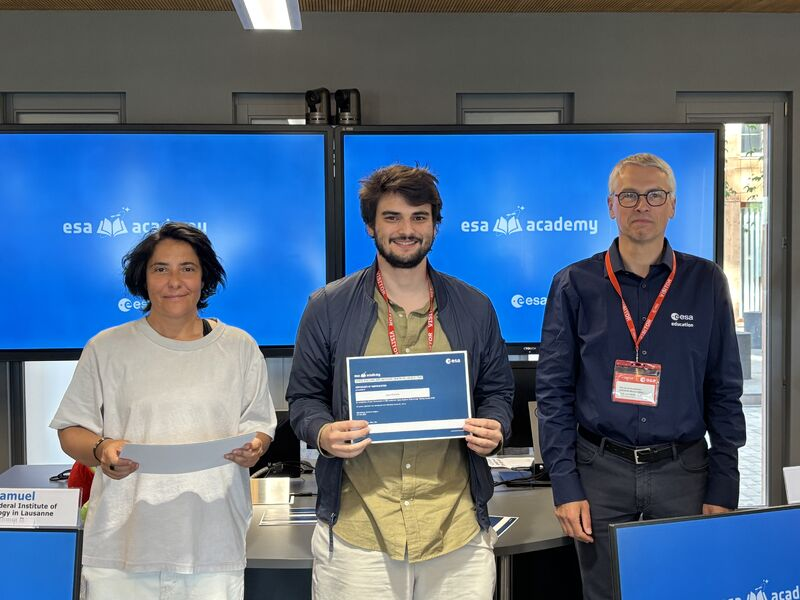

About
I am Jason Wakim Richards, a Doctoral Researcher at SnT, University of Luxembourg, working on Semantic Relational SLAM and autonomous UAV systems. My research focuses on linking camera–IMU state estimation, perception, semantic mapping, navigation, planning, and control to enable UAVs to operate reliably in unstructured environments.
My work spans the robotics stack, from low-level control and perception to system integration and field testing. See my research and projects for current work and past GNC and CubeSat systems experience.

Background
- Current Position
- Doctoral Researcher, SnT, University of Luxembourg
- Research Interests
- Semantic SLAM, UAV Autonomy, Multi-Robot Systems, Sensor Fusion, State Estimation, Motion Planning, Embedded Flight Software
- Location
- Luxembourg
- jason2richards@uni.lu
Profiles
- GitHub
- github.com/richarJ2002
- ORCID
- orcid.org/0009-0002-3492-1919
- linkedin.com/in/jason-richards-jwr2002/